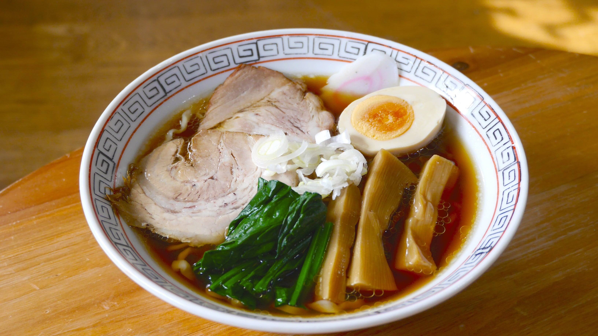

Ramen

Description
Fast to make and delicous meal
Ingredients
- Ramen noodles
- Garlic and ginger
- Broth
- Dried mushrooms
- Veggies
Steps
- Stir-Fry The Aromatics: Garlic and ginger, what a delicious duo.
- Add some chicken broth and dried shiitake mushrooms for some umami punch.
- Add Noodles: Cook your noodles right in the broth with some scallions (more flavor, please!).
- Add Veg: Thinly sliced kale, shredded carrots, whatever you’d like! Cook until just tender.
Home